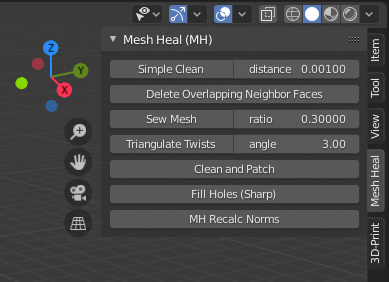

Mesh Heal add-on documentation¶
Introduction¶
Mesh Heal is an add-on for Blender. It includes additional Blender operators for healing surface meshes. By default, Blender contains many routines that are meant for these tasks. Unfortunately, Blender’s default routines don’t always produce good results in some difficult cases. Specifically, I run into problems when I was trying to convert non-manifold isosurfaces into manifold surfaces with consistent face normals appropriate for volumetric rendering.
Warnings¶
- Mesh Heal operators are work in progress, use at your own risk.
- Mesh Heal operators are slow.
- Supported only on Blender version 2.79 (not yet version 2.8x).
Recommendations¶
First try to use Blender’s default routines to heal your mesh. Especially, please check the official 3D Print Toolbox add-on, which contains many mesh healing and analysis operators. If Blender’s default operators fail, try this add-on.
Installation¶
Source code is available in https://github.com/tkeskita/mesh_heal
Use “Clone or download” in github, and “Download ZIP”
Start Blender, go to “User Preferences” –> Install from File –> open the downloaded zip file
Activate the “Mesh Heal add-on” in User preferences. It is located in “Community” level of Blender add-ons.
Note
Enabling Mesh Heal add-on will also enable 3D Print Toolbox add-on (which is a requirement for Mesh Heal add-on).
Usage¶
Mesh Heal (MH) add-on tools are currently available in object mode. Tools are located in “Print 3D” tab in the operator panel, below or above 3D Print Toolbox.
All operators are available in object mode (and some in edit mode as well). Operators are listed in operator search menu prepended with “MH”.
Simple Clean¶
This is a convenience operator, which combines several cleaning actions:
- Merges closeby vertices using the distance value set in the operator panel
- Runs the Delete Overlapping Neighbor Faces operator
- Removes non-manifold vertices (not boundary vertices), edges and faces
- Deletes edges and vertices that are not part of faces
Delete Overlapping Neighbor Faces¶
Deletes overlapping neighbor faces and removes dangling edges and vertices. Neighbor faces mean faces that share an edge. Overlapping is determined by face-face angle measured at the shared edge. Primarily the face with fewer vertices is deleted. If number of vertices are identical, then smaller face is deleted.

Sew Mesh¶
Reduces number of boundary edges in mesh by merging pairs of closeby boundary vertices (sew open seams). Boundary vertices are merged if ratio of vertex pair distance to smallest boundary edge length (of edges connected to either vertex) is smaller than threshold.

Clean and Patch¶
Main mesh cleaning routine. This routine attempts (but does not guarantee) to make closed volumes by merging vertices, then repeatedly removing bad faces and refilling boundary holes left in the mesh. Bad faces are made of vertices, which are either boundary vertices, or vertices of intersecting or overlapping faces.

Fill Holes (Sharp)¶
Fills boundary edges in object obj with triangles by a ‘sharpest angle first’ approach. This method processes each continuous boundary edge loop and fills it with triangles by connecting two neighboring boundary edges. Connections are done in vertex angle sharpness order, so that a face is filled to the vertex whose boundary edges form shapest angle. Connection is not made if it would create intersecting faces. Triangle filling is repeated until all boundary edges that can be processed, have been processed.

MH Recalc Norms¶
Recalculates normals of object using a recursive outward face normal casting and propagation method (see below).
This operator works best on closed surfaces, but can be run on non-manifold meshes as well. Algorithm also supports layers of surfaces inside surfaces, in which case each surface layer normals are set to opposite direction of outer layer normals. Faces whose normals could not be calculated are added to selection when operator is finished.
This Cycles volumetric emission shader example below shows how normal direction affects the rendering result. The normals of the inner surfaces are corrected by this operator.

Description of the algorithm:
Normal calculation algorithm contains alternating casting and propagation phases. In casting phase, rays are cast from each unprocessed face to both current normal and opposite directions. If possible, normal information is set depending on what the rays hit (e.g. world boundary, or a face with confirmed normal direction) and the face is marked as processed. The method relies on getting correct results from casting phase. Therefore a few heuristics (search for overlapping and high aspect ration faces) are included to choose which faces are not included in casting.
In propagation phase, the normal direction is propagated from processed faces to neighboring faces iteratively until all faces have been processed. The casting and propagation phases are repeated until all faces are processed.